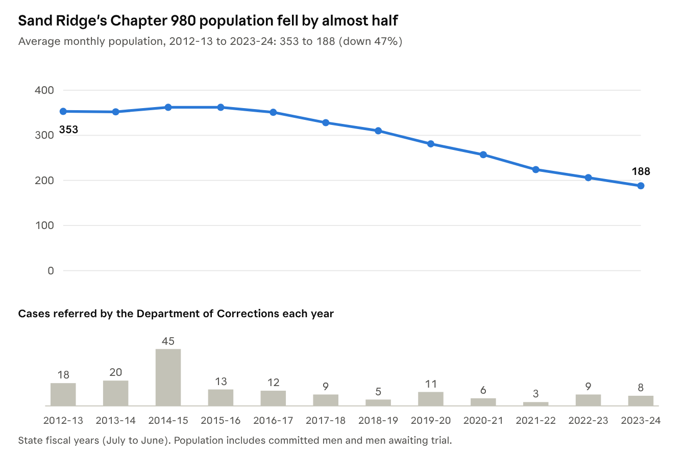

In This Article
- A Place to Begin
- 1. Chapter 980 in Two Minutes
- 2. What Sand Ridge Is
- 3. The Numbers: Who Is There and for How Long
- 4. The Cost
- 5. Treatment and the Road Out
- 6. Outcomes: What Happens After Sand Ridge
- 7. Who Isn't There: Women
- 8. Reading the Numbers With Care
- Closing: What the Numbers Tell Us
- Where to Find Help
- References and Notes
A Place to Begin
Wisconsin holds about 155 men at a secure facility in Mauston, most of them after their prison sentences ended, and the law gives none of them a release date. [1] They are committed under Chapter 980 of the Wisconsin Statutes as "sexually violent persons" (SVPs), and they live at the Sand Ridge Secure Treatment Center (Sand Ridge). [1]
Our earlier article, Rapist, Pedophile, Sex Offender: Why Wisconsin Law Says They're Not the Same, explained what Chapter 980 requires. [3] This article picks up where that one stopped. It asks what Sand Ridge is, who is there, what it costs, how people leave, and what the official numbers do and do not show.
One fact runs through all of it. Since the law took effect in 1994, Wisconsin has never committed a woman as an SVP. [1] We return to that fact near the end, as a question worth asking rather than a conclusion.
Most figures here come from the nonpartisan Wisconsin Legislative Fiscal Bureau's January 2025 report, which carries data through September 2024. [1] The Fiscal Bureau updates that report every two years, so newer figures may follow.
1. Chapter 980 in Two Minutes
A person can be committed under Chapter 980 only if the state proves two things beyond a reasonable doubt. [2][4]
- A qualifying offense. The person was convicted of, adjudicated delinquent for, or found not guilty by reason of mental disease of a "sexually violent offense." That list includes first-, second- and third-degree sexual assault, the main sexual offenses against children, and certain other crimes proven to be "sexually motivated." [2]
- A mental disorder that makes the person dangerous. The person has a mental disorder that makes it more likely than not that he will commit an act of sexual violence. [2]
The process begins near the end of a prison term. The Department of Corrections (DOC) screens people scheduled for release and refers some to the Department of Justice (DOJ) or a district attorney (DA), who may file a petition. [1, at 2–3] A judge then decides whether there is probable cause, and a trial must start within 90 days after that hearing. [1, at 3–4] Either side may ask for a 12-person jury, and a jury verdict must be unanimous. [1, at 4]
Commitment lasts until the person no longer meets the definition. [1, at 4] It is a civil commitment, not a sentence, and the Wisconsin Supreme Court has upheld it on that basis since 1995. [1, at 1]
For the full explanation of these elements, including why a past conviction alone is not enough, see our earlier article and Episode 6 of The People's Paralegal. [3]
2. What Sand Ridge Is
Sand Ridge is a secure treatment facility in the City of Mauston, in Juneau County, run by the Wisconsin Department of Health Services (DHS). It opened in 2001, and every SVP held in institutional care is now housed there. [1, at 1, 4]
The men are called patients, not inmates, but the setting is secure. Sand Ridge was built with a maximum-security perimeter at the surrounding community's request. [8]
How it is organized. SVPs live in two complexes made up of 25-bed units, grouped by treatment track and phase. [1, at 5] Sand Ridge also runs several specialized units:
- a skilled care unit for patients with serious physical health needs
- a supportive learning unit for patients with mental health needs
- a six-bed unit for patients who may be verbally or physically aggressive
- a 15-bed unit for patients preparing to move into the community on supervised release [1, at 5]
Fewer rights than other civil patients. State law gives committed SVPs fewer rights than patients at Wisconsin's state mental health institutes. Staff may open patients' mail and inspect it for contraband, and in some cases read it. They may lock patients in their rooms during the night shift. They may use restraints during transport, and in some circumstances film patients for security without consent. [1, at 5]
Not only Chapter 980 patients. As the SVP population has shrunk, DHS has filled empty units with other forensic patients. [1, at 5]
- Since 2018, Sand Ridge has housed people found not guilty by reason of mental disease or defect, a status often called "NGI" (not guilty by reason of insanity). [1, at 5]
- Since 2024, one unit has temporarily held people receiving "treatment to competency" (TTC), meaning treatment so they can understand their criminal case and stand trial. [1, at 5]
- In the 2023–24 fiscal year, Sand Ridge held an average of 60 NGI patients and 18 TTC patients, to ease space constraints at Mendota Mental Health Institute in Madison. [1, at 5]
This matters for reading the numbers. A facility built for SVPs is increasingly a general forensic hospital, and some of its costs and staff serve all of these patients.
3. The Numbers: Who Is There and for How Long
The population held at Sand Ridge under Chapter 980 has fallen by almost half in eleven years. The monthly average was 353 in the 2012–13 fiscal year and 188 in 2023–24. [1, at 11] These counts include men awaiting trial as well as men already committed.

In September 2024, the breakdown was:
- 155 men committed as SVPs and held at Sand Ridge
- 25 men held at Sand Ridge in "pre-commitment" status while their cases are pending
- 76 men on supervised release in communities around the state [1, at 1, 3]
The Fiscal Bureau's counts vary a little by month and table. Its length-of-commitment table counts 186 men in September 2024, and its treatment table counts 183 in August 2024, compared with 155 committed plus 25 pending. [1, at 1, 6, 11] This article uses each figure as the report gives it. The differences do not change any trend described here.
Why the decline. The population generally rose each year from 1994 until it peaked at about 385 in 2008–09. [1, at 10] The Fiscal Bureau points to two reasons it has fallen since then. [1, at 11]
- In 2009, DHS revised the risk assessment tool it uses to estimate the chance of reoffending. The change rested partly on research suggesting that risk falls with age more than was previously thought.
- Since the early 2000s, prison sentences for sexually violent offenses have grown longer. Men are older when they finish those sentences, so fewer meet the commitment criteria.
Fewer referrals and trials. DOC referred between 12 and 45 cases a year for possible commitment from 2012–13 through 2016–17, but 11 or fewer every year since. [1, at 11 tbl.3] In calendar year 2023, courts held 22 trials on initial commitment, and 8 ended in commitment. [1, at 4] That is about 36%, so a trial does not guarantee commitment.
Long stays. Most men at Sand Ridge have been there for more than a decade.
| Time in institutional commitment (Sept. 2024) | Men | Share |
|---|---|---|
| 0 to 2 years | 18 | 9.7% |
| 2 to 5 years | 16 | 8.6% |
| 5 to 10 years | 32 | 17.2% |
| 10 to 20 years | 83 | 44.6% |
| Over 20 years | 37 | 19.9% |
Source: [1, at 11 tbl.4]. Together, 120 of 186 men (64.5%) had been committed for more than ten years.
Diagnoses, not crimes. We found no public report that breaks down Wisconsin's SVPs by the crime that led to commitment; the Legislative Audit Bureau's 2013 review of the program likewise has none. [6] The closest available data is the list of mental disorders found to predispose each man to sexual violence. A man may have several, so the shares add up to more than 100%. [1, at 2 tbl.1]
| Predisposing diagnosis (Dec. 2023) | Men | Share |
|---|---|---|
| Antisocial personality disorder | 124 | 54% |
| Alcohol use disorder | 105 | 46% |
| Pedophilia, attraction to both sexes | 86 | 37% |
| Other specified paraphilic disorder | 63 | 27% |
| Cannabis use disorder | 57 | 25% |
| Depression | 51 | 22% |
| Personality disorder | 42 | 18% |
| Pedophilia, attraction to females | 35 | 15% |
| Generalized anxiety disorder | 31 | 13% |
Source: [1, at 2 tbl.1]. The table covers men at Sand Ridge and men on supervised release.
If no man appears in both pedophilia rows, they total 121 men, about half. That is close to a 2025 study of men released from Sand Ridge, which found a recorded pedophilic disorder diagnosis in 50%. [7] A diagnosis describes a person, though, not the crime he was convicted of. These figures should not be read as offense counts.
4. The Cost
Sand Ridge cost $79.8 million to run in the 2023–24 fiscal year, up 36% from $58.6 million four years earlier, while its SVP population fell by a third. [1, at 11, 13] All of it is paid from the state's general purpose revenue (GPR), meaning state tax dollars. No federal or local money supports the program. [1, at 12]
| Fiscal year | Sand Ridge institutional cost | Supervised release cost | Average monthly Sand Ridge population |
|---|---|---|---|
| 2019–20 | $58,628,000 | $5,391,000 | 281 |
| 2020–21 | $59,831,200 | $6,579,700 | 257 |
| 2021–22 | $65,172,400 | $6,761,400 | 224 |
| 2022–23 | $66,033,000 | $6,355,900 | 206 |
| 2023–24 | $79,789,600 | $8,711,900 | 188 |
Sources: [1, at 11 tbl.3, 13 app.].
Cost per person. The Fiscal Bureau reported an average of about $141,400 per Sand Ridge patient in 2012 and about $209,000 in 2020. [9][10] It did not publish a per-patient figure for 2023–24. Dividing the year's institutional cost by Sand Ridge's average Chapter 980 population gives roughly $424,000 per patient. That is a rough upper figure, because Sand Ridge now also houses NGI and TTC patients and some of its spending may serve them. The same math for 2019–20 gives about $208,600, which matches the Fiscal Bureau's own $209,000 figure, so the method is consistent with theirs. [9] Most of the jump came in one year: institutional cost rose 21% in 2023–24, driven mainly by staff costs, which grew from $46.9 million to $59.0 million. [1, at 13]
Supervised release costs far less. The 2023–24 program cost of $8.7 million, spread across an average of 76 people, works out to about $115,000 per person. [1, at 11 tbl.5, 12] The same math for 2019–20 gives about $79,300, matching the Fiscal Bureau's figure for that year. [9] That money pays private vendors for housing, case management, monitoring and transportation, and pays DOC for supervision, Global Positioning System (GPS) equipment and escorts. [1, at 12–13]
Who the money pays. Staff costs were $59.0 million of the $79.8 million. [1, at 13] Sand Ridge had 499.1 full-time equivalent (FTE) positions in 2023–24, and 438.1 were filled at the end of the year. [1, at 12] The largest groups are security staff: 176 psychiatric care technician positions and 90 correctional officer and sergeant positions. [1, at 12]
A shrinking population in a large secure building pushes the per-person cost up. Much of what a secure facility costs, such as its perimeter, round-the-clock security staffing and building upkeep, does not shrink as fast as its population.
5. Treatment and the Road Out
Treatment at Sand Ridge is voluntary, and in August 2024, 174 of 183 SVPs were taking part in core treatment. [1, at 6 tbl.2] The other 9 were in "pre-treatment" status, which means they had not consented or had withdrawn. [1, at 6]
Three tracks, three phases. Each patient is placed in a track that fits his thinking skills and disorder. [1, at 6]
| Treatment track (Aug. 2024) | Who it serves | Participants |
|---|---|---|
| Conventional | Patients with the least severe cognitive impairment or psychopathy | 54 |
| Corrective Thinking | Patients with marked psychopathic traits but no major cognitive impairment | 68 |
| Achieving Capability to Thrive | Patients with the most specialized needs | 52 |
Source: [1, at 6 & tbl.2]. Within each track, patients move through three phases. Phase one builds the skills and motivation to take part. Phase two works out what led to the man's past offenses. Phase three focuses on managing his own risk factors and building healthier ways of living. [1, at 6]
Yearly review. DHS must examine each committed man's mental condition within 12 months of commitment and at least once a year after that. [1, at 6–7] The report goes to the committing court, the man, his attorney, and the prosecutor. [1, at 7]
Supervised release. A man may petition for supervised release once 12 months have passed since his commitment, his last denied petition, or his last revocation. [1, at 7][5] At the hearing, which is held without a jury, he carries the burden. He must prove by clear and convincing evidence that: [1, at 7–8]
- he is making significant progress in treatment and can keep it up on release;
- it is substantially probable he will not commit an act of sexual violence while on release;
- suitable treatment and a qualified provider are reasonably available;
- he can reasonably be expected to follow the treatment requirements and release rules; and
- a reasonable level of resources can meet his housing, supervision and treatment needs.
Waiting for a place to live. Winning the hearing does not open the door. The county of residence must form a committee to find housing and report to DHS within 120 days. DHS then has 30 days to file a release plan with the court. [1, at 8] On average in recent years, about 300 days passed between the court's order to find housing and the man's actual release. Once the court approved a plan, placement followed in about 31 days. [1, at 8–9] On September 1, 2024, five men approved for release were still waiting at Sand Ridge. [1, at 11]
Life on supervised release. For the first year, a man may leave his residence only for approved purposes, such as work, treatment, religion, school or basic needs, and only with an escort. [1, at 9] DOC tracks everyone on supervised release by GPS. Probation and parole agents meet with them in person, and the program uses scheduled and surprise checks and polygraph examinations. [1, at 9][12]
Revocation. If a man breaks or threatens to break a rule, DHS may detain him and ask the court to revoke his release. [1, at 9] From 2019 through 2023, supervised release was revoked for an average of 9.4 people a year. [1, at 10]
Discharge. A man may petition for discharge at any time. If the court finds facts that could show he no longer qualifies, it holds a hearing. At that hearing the state must prove by clear and convincing evidence that he still meets the definition. [1, at 10][5] A six-person jury may be requested, and five of the six must agree. [1, at 10] As of July 1, 2024, 316 people had been discharged since 1994. Sixty percent were discharged directly from institutional care, and 40% from supervised release. [1, at 10–11]
| Fiscal year | People on supervised release (monthly average) | Discharges |
|---|---|---|
| 2012–13 | 30 | 11 |
| 2014–15 | 40 | 1 |
| 2016–17 | 51 | 13 |
| 2017–18 | 60 | 31 |
| 2019–20 | 68 | 18 |
| 2021–22 | 78 | 39 |
| 2022–23 | 72 | 19 |
| 2023–24 | 76 | 20 |
Source: selected years from [1, at 11 tbl.5]. The supervised release counts include men approved for release but still waiting at Sand Ridge. As Sand Ridge's population fell by half, the number of people on supervised release more than doubled. Discharges rose too: at least 18 people a year have left commitment every year since 2017–18, compared with 1 to 13 a year in the five years before. [1, at 11 tbl.5]
6. Outcomes: What Happens After Sand Ridge
Three official or peer-reviewed sources measure what happens after men leave Sand Ridge. They measure different things, so their numbers differ. Read side by side, they tell one story: revocations for rule violations are common, and new sexual offenses are less common.
The 2025 study (Carr et al.). Researchers followed 170 men placed on supervised release from Sand Ridge through their first two years in the community. [7]
| Outcome within two years (170 men) | Men | Share |
|---|---|---|
| Release revoked for any violation | 68 | 40% |
| Revoked for a sexual-offense-related reason, including "offense-analogous" conduct | 31 | 18.2% |
| Revocation involving any criminal offense | 17 | 10% |
| Revocation involving a sexual offense | 11 | 6.5% |
Source: [7, at tbls.2–3]. The categories overlap, and the offense figures come from revocation records, not only new convictions. "Offense-analogous" conduct means behavior that was not a crime but, according to the records, showed a return of the interests or behaviors tied to past offending. [3] The authors caution that these men were selected for release and lived under very strict conditions, so the results do not describe people on ordinary probation or parole. [3][7]
The 2013 Legislative Audit Bureau review. The Legislative Audit Bureau, the Legislature's nonpartisan auditor, looked at everyone who had been on supervised release through early 2013. [6]
- 33 of 96 people (34.4%) had their release revoked at least once. Most revocations were for rule violations, such as having unapproved items, unapproved contact, lying or failing a polygraph, and sexual misconduct. [6, at 42]
- Only 4 of the 33 people whose release was revoked were convicted of a new offense, and 1 of those convictions was a sexual offense against a child. [6, at 42–43]
- Of 45 men discharged directly from a DHS facility from 1994 to 2010, 2 (4.4%) were convicted of a new sexual offense within three years, and 10 (22.2%) of a non-sexual offense. [6, at 43 tbl.9]
- Of 22 men discharged from supervised release over a similar period, 3 (13.6%) were convicted of a new sexual offense within three years, and 3 (13.6%) of a non-sexual offense. [6, at 44 tbl.10]
The Fiscal Bureau's yearly count. From 2019 through 2023, supervised release was revoked an average of 9.4 times a year. [1, at 10] With about 60 to 78 people on supervised release in those years, that is roughly one in eight per year. [1, at 11 tbl.5]
Why the numbers don't contradict each other.
- They count different things. One counts any revocation in two years, one counts anyone ever revoked, and one gives a yearly average. A two-year count of newly released men may run higher than a yearly average across everyone on release, including men who have been out for years.
- A revocation is not a new crime. Most are for breaking a release rule, and the rules are far stricter than ordinary supervision.
- The groups are small. One extra conviction in a group of 22 moves the rate by about 4.5 percentage points.
- The 2013 figures cover men released from 1994 to 2010, before the 2009 risk tool change had much effect, so they may not describe today's population.
The 2013 audit's small groups should not be used to argue that discharge from supervised release is riskier than direct discharge. The men in each group differed, the numbers are too small, and the data is more than fifteen years old.
7. Who Isn't There: Women
In more than thirty years of Chapter 980, Wisconsin has never committed a woman as a sexually violent person. [1, at 4] The Fiscal Bureau's 2015 report went further and stated that no woman had ever even been referred for commitment. [11, at 2] Everyone committed under Chapter 980 since 1994, including all 316 people discharged, has been a man.
The law itself is written for anyone. Chapter 980 defines an SVP as a "person," using "he or she." [2] The Legislature even planned for a woman: the statutes let DHS place a female SVP at Mendota Mental Health Institute, the Wisconsin Women's Resource Center, Winnebago Mental Health Institute, or a contracted private facility. [1, at 4]
So why has none ever been committed? The public reports don't say, and this article won't guess. Here are the questions the numbers raise, and the records that could answer them.
- How many women finish prison sentences for qualifying offenses? If very few women are convicted of the listed offenses, very few would ever reach DOC's screening. DOC release data by sex and offense would show this.
- Are the risk tools built for men? The commitment process relies on risk assessments, and the 2009 tool change shows how much those tools shape who is referred. [1, at 11] If the tools were developed and tested mainly on men, they may say little about women. DOC and DHS could state which tools they use for women, if any.
- Does screening ever reach a woman? DOC's End of Confinement Review Board reviews each sex offender scheduled for release. [1, at 3] Its records would show whether any woman has been screened, how many were, and why none were referred.
- Does the "mental disorder" element play a role? Commitment requires a diagnosis that predisposes the person to sexual violence. [2] How often evaluators find such a diagnosis in women is an open question the public data does not answer.
These questions don't assume any answer. A woman's absence from Sand Ridge may reflect real differences in offending, the limits of tools built on men, or both. What the record shows is that the system has never committed a woman, and as of 2015 had never even referred one.
An open records request to DOC and DHS for aggregate, unnamed counts would answer much of this.
8. Reading the Numbers With Care
The numbers in this article are official and sourced, but each has limits worth keeping in mind.
- Dates matter. Most figures run through September 2024. The Fiscal Bureau has updated this report every two years, so a new edition may appear in early 2027.
- Diagnoses are not convictions. No public data breaks down Wisconsin's SVPs by offense.
- Revocations are not new crimes. Most revocations are for breaking strict release rules.
- Small groups swing hard. Several outcome figures rest on a few dozen people.
- Cost per person is an estimate. Sand Ridge now houses other forensic patients, and the public figures do not fully separate their costs.
- Averages hide people. Each count is a person with a history, a victim or victims, and a case decided by a judge or jury.
Closing: What the Numbers Tell Us
The numbers show a system that is getting smaller, older and more expensive per person. Fewer men are referred, fewer are committed, and more leave through supervised release than a decade ago. Those who remain have mostly been there more than ten years, and each one costs the state more than $200,000 a year, and possibly far more.
They also show what the system has never done: commit a woman. Whatever the reason, that fact belongs in any honest discussion of who Chapter 980 reaches and why.
Where to Find Help
- Survivors of sexual violence: the Wisconsin Coalition Against Sexual Assault (WCASA) at wcasa.org, or the National Sexual Assault Hotline run by RAINN (the Rape, Abuse & Incest National Network) at 800-656-4673 or rainn.org.
- Legal questions about a Chapter 980 case: a qualified Wisconsin attorney. The State Bar of Wisconsin's Lawyer Referral and Information Service can help you find one.
- Victim notification: victims can enroll for notice of an SVP's release through DOC's Office of Victim Services and Programs, 800-947-5777. [13]
This article educates. It does not provide legal advice, and Paper Chasers LLC is not a law firm.
References and Notes
Need help gathering or organizing documents? Paper Chasers LLC provides administrative document support throughout Wisconsin. We do not give legal advice, but we can help you locate records, organize paperwork, and stay on track.
Request Service Administrative Support Watch The People’s Paralegal More Articles